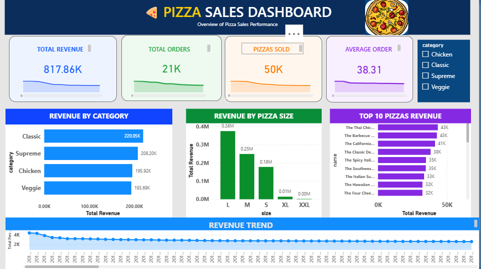
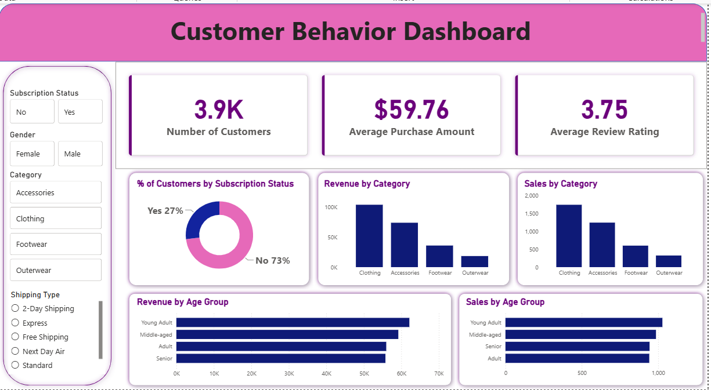

Hello, I'm
I enjoy transforming raw data into meaningful business insights using SQL, Python, Excel, and Power BI. I'm currently seeking opportunities where I can apply analytical thinking, data visualization, and problem-solving skills to support data-driven decision making.
Projects Completed
Database Querying
Interactive Dashboards
Data Cleaning & EDA
B.Tech in Electrical Engineering from Indian Institute of Technology Jodhpur, where I developed strong analytical and problem-solving skills.
Passionate about transforming raw data into actionable insights through SQL, Python, and Power BI. I enjoy solving business problems using data analytics and continuously building practical projects to strengthen my analytical skills
Seeking a Data Analyst role where I can transform complex datasets into actionable insights that support strategic business decisions.

Performed end-to-end data analysis on pizza sales data by cleaning and exploring the dataset using SQL and Excel, conducting Exploratory Data Analysis (EDA) to uncover sales patterns and customer preferences, and building an interactive Power BI dashboard with DAX measures to visualize KPIs, revenue trends, product performance, and actionable business insights.
Analyze sales performance and business KPIs.
Power BI • SQL • Excel • EDA • DAX
Analyzed customer data using MySQL, SQL, and Jupyter Notebook (Pandas and NumPy), performed Exploratory Data Analysis (EDA) to uncover purchasing trends, and built an interactive Power BI dashboard to visualize customer demographics, subscriptions, discounts, revenue, and business insights.
Understand customer purchasing behaviour.
Power BI • MySQL • SQL • Python • Pandas • NumPy • Jupyter Notebook • Excel

Indian Institute of Technology Jodhpur | 2022–2026
I'm currently seeking opportunities in Data Analytics. Feel free to reach out for internships, full-time roles, collaborations, or simply to connect.